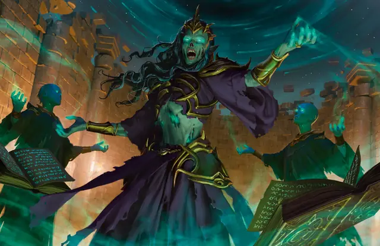

Лич
Lich
Средняя Нежить (Волшебник), Нейтральная Злая

Класс Защиты 20 Инициатива +17 (27)
Хиты 315 (42к8 + 126)
Скорость 30 футов
| мод | спас | ||
|---|---|---|---|
| СИЛ | 11 | +0 | +0 |
| ЛОВ | 16 | +3 | +10 |
| ТЕЛ | 16 | +3 | +10 |
| мод | спас | ||
|---|---|---|---|
| ИНТ | 21 | +5 | +12 |
| МДР | 14 | +2 | +9 |
| ХАР | 16 | +3 | +3 |
Сопротивление урону Холод, Электричество
Иммунитеты Некротический, Яд; Испуганный, Истощение, Отравленный, Очарованный, Парализованный
Чувства пассивное Восприятие 19, Истинное зрение 120 футов
Языки Все
Опасность 21 (33 000 опыта или 41 000 опыта в Логове; БВ +7)
Особенности
Легендарное сопротивление (4/день, или 5/день в Логове). Если лич проваливает спасбросок, он вместо этого может в нём преуспеть.
Филактерия. Спустя 1к10 дней после уничтожения лич заново возрождается со всеми Хитами, если его филактерия цела. Его новое тело появляется в незанятом пространстве в логове лича.
Действия
Мультиатака. Лич совершает три атаки Потусторонней вспышкой или Парализующим касанием в любой комбинации.
Потусторонняя вспышка. Бросок рукопашной или дальнобойной атаки: +12, досягаемость 5 фт. или дистанция 120 фт. Попадание: 31 (4к12 + 5) Силового урона.
Парализующее касание. Бросок рукопашной атаки: +12, досягаемость 5 фт. Попадание: 15 (3к6 + 5) урона Холодом, и цель Парализована до начала следующего хода лича.
Сотворение заклинаний. Лич сотворяет одно из следующих заклинаний (заклинательная характеристика — Интеллект, Сл спасброска заклинаний 20):
Неограниченно: Волшебная рука, Молния, версия 5-го уровня, Невидимость, Обнаружение магии, Обнаружение мыслей, Огненный шар, версия 5-го уровня, Рассеивание магии, Фокусы
2/день каждое: Переносящая дверь, Планарный переход, Поднятие мертвеца
1/день каждое: Наблюдение, Перст смерти, Слово силы: смерть, Цепная молния
Реакции
Защитная магия. Лич сотворяет Контрзаклинание или Щит в ответ на условие этого заклинания (заклинательная характеристика — та же, что для Сотворения заклинаний).
Легендарные действия
У этого существа есть 3 использования Легендарных действий (или 4 использования в его Логове); оно может немедленно после окончания хода другого существа потратить одно использование, чтобы совершить одно из следующих действий. Существо восполняет все потраченные использования в начале каждого своего хода.
Смертельный телепорт. Лич телепортируется в видимое им в пределах 60 футов незанятое пространство, и каждое существо в пределах 10 футов от покинутого им пространства получает 11 (2к10) Некротического урона.
Разрушение жизни. Спасбросок Телосложения: Сл 20, каждое существо, кроме Нежити, в 20-футовой Эманации, исходящей от лича. Провал: 31 (9к6) Некротического урона. Успех: Только половина урона. Провал или успех: Лич не может совершить это действие повторно до начала своего следующего хода.
Ужасающий взгляд. Лич сотворяет заклинание Ужас (заклинательная характеристика — та же, что для Сотворения заклинаний). Лич не может совершить это действие повторно до начала своего следующего хода.
Бонус мастерства +7
Среда обитания Любая
Сокровища Магические
Лич
Бессмертный повелитель магии
Некоторые нечестивые маги проводят запретные ритуалы некромантии, чтобы отделить свою душу от тела и стать личом — повелителем магии и смерти. Спрятав свои души в древних реликвиях и освободившись от оков смертности, они управляют собственным телом как марионеткой в театре личных амбиций.
Личи невероятно коварны, искусны в магии и тратят своё противоестественное бессмертие на постижение тайных знаний, которые невозможно познать за одну жизнь. Необъяснимые замыслы заставляют их погрузиться в тайны жизни, строения мультивселенной, сущности божественности и другие, ещё более загадочные области знаний. Личи готовы на всё ради достижения своих целей — жизни и желания смертных ничего не значат для них.
По облику лича можно определить его возраст и происхождение. Древние мертвецы — хрупкие скелеты в сгнивших нарядах давно исчезнувших империй. Молодые личи больше похожи на живых и носят современную одежду. Многие из них скрывают свою сущность за иллюзией приукрашенного смертного облика.
Хотя личи смогли победить смерть, время всё ещё властно над ними. Спустя века некоторые из них теряют связь с реальностью и потоком времени, превращаясь в демиличей.
Филактерии
Превращение в лича — это сложный и рискованный процесс, который проходит по-разному для каждого желающего стать бессмертным. Если ритуал завершится успешно, душа станет связанной с филактерией — специально подготовленным для этого магическим хранилищем. Эта реликвия удерживает душу волшебника в мире живых и сохраняет её, если его неживое тело будет уничтожено. Лича можно убить, лишь уничтожив филактерию, поэтому он прикладывает все усилия, чтобы спрятать и защитить её.
Зачастую филактерии представляют собой маленькие, искусно сделанные предметы, которые были важны для лича при жизни. Совершите бросок по таблице «Филактерия лича» для вдохновения или выберите сами место, где лич спрятал свою душу.
Филактерия лича
| 1к8 | Филактерия лича — это… |
| 1 | Бутыль или шкатулка с секретом, на которых начертаны магические символы. |
| 2 | Оригами, сложенное из договора. |
| 3 | Его первый магический предмет. |
| 4 | Полая статуэтка божества или чудовища. |
| 5 | Песочные часы с застывшим внутри песком. |
| 6 | Медальон или перстень-печатка с дворянским гербом. |
| 7 | Украшенное рунами яйцо. |
| 8 | Череп его наставника. |
Логова личей
Личи создают тайные библиотеки магических знаний и секретные лаборатории внутри межпланарных бастионов, замках со зловещей репутацией или других смертельно опасных убежищ.
Местность, в которой находится логово лича, изменяется из-за его присутствия, что создаёт следующие эффекты:
• Всевидящий. Пока лич находится в логове, он может творить заклинание Подсматривание, не нуждаясь в компонентах (заклинательная характеристика — та же, что для его действия Сотворение заклинаний).
• Неминуемое поглощение. Если Гуманоид умирает в 1 миле от логова, его душа будет немедленно поглощена личем. Такое существо может быть возвращено к жизни лишь с помощью заклинаний Истинное воскрешение или Желание.
Если лич умирает или перемещает своё логово в другое место, все эти эффекты мгновенно исчезают. Эти эффекты начинают действовать вновь, если он получает новое тело (см. особенность «Филактерия»).